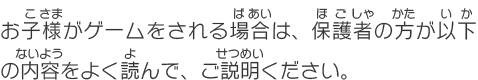
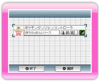

4 |
 |

持ち方は、使用するコントローラによって異なります。次のように持って、操作してください。
※WiiリモコンとWiiリモコンジャケット、ストラップの装着方法については、Wii本体取扱説明書、またはWiiリモコンジャケット取扱説明書をご覧ください。 
※必ず、使用する各コントローラの取扱説明書もあわせてご覧ください。
ヌンチャク、クラシックコントローラ（クラシックコントローラPROを含む）、ゲームキューブコントローラの各ボタンや各スティックのニュートラルポジション※の位置がずれ、正常に操作できなくなった場合は、次の操作を行ってください。
※ニュートラルポジションとは…
ニンテンドーDSをコントローラとして使用する場合の使用方法について、説明します。
※このソフトでは、ニンテンドーDSはコントローラとしてのみ使用でき、ニンテンドーDS専用ソフトと通信することはできません。
● ニンテンドーDS本体（DSi、DS Lite含む） ・・・・・1台 青字はWiiの操作、赤字はニンテンドーDSシリーズ本体の操作です。 ① タイトルメニュー画面（→P.9）で「DSシリーズほんたいを せつぞくする」を選んでください。または、ポケモンガーデンメニュー（→P.14）やダンジョンメニュー（→P.19）の「そのた」で、 ② ニンテンドーDSシリーズ本体の電源をONにしてください。DSメニュー画面が表示されるので、 ③ 「はい」を選ぶと、ニンテンドーDSシリーズ本体にデータの送信を開始します。

④ 右の画面が表示されたら、「ポケモンダンジョンコントローラ」をタッチしてください。ダウンロード確認画面が表示されるので、正しければ「はい」をタッチしましょう。 ⑤ ダウンロードが終わると、ニンテンドーDSシリーズ本体をコントローラとして使えるようになります。ゲームの始めかたについては、P.9をご覧ください。 ※ニンテンドーDSシリーズ本体の操作方法については、ポケモンガーデンメニューやダンジョンメニューで「そのた」→「そうさせつめい」の順に選んで確認してください。
● 通信中のニンテンドーDS本体の画面に表示されるアイコン ※ ニンテンドーDS、DS Liteでワイヤレス通信機能がONになっているときは、電源ランプが変速点滅します。 ※ ニンテンドーDSiで無線通信機能がONになっているときは、無線ランプが黄色に点灯します。 ● 快適な通信を行うために、次のことを参考に通信プレイを行ってください。 ・ Wii本体とニンテンドーDS本体の距離は10m以内、もしくは受信強度アイコンのアンテナの数が2本以上となる距離としてください。 ・ Wii本体とニンテンドーDS本体の間に、人や物など、障害物が入らないようにしてください。 ・ 電波干渉の原因となる機器（電子レンジ・コードレス機器など）によって、通信プレイに支障が出る場合は、Wii本体をその場所から離れた場所に設置するか、電波干渉の原因となる機器の使用を中止してください。 ・ ニンテンドーDSiを使用される場合は、DSiの本体設定の無線通信をONにしてください。詳しくは、ニンテンドーDSi本体取扱説明書 操作編「本体設定」をご覧ください。 |


 |
 |
 |